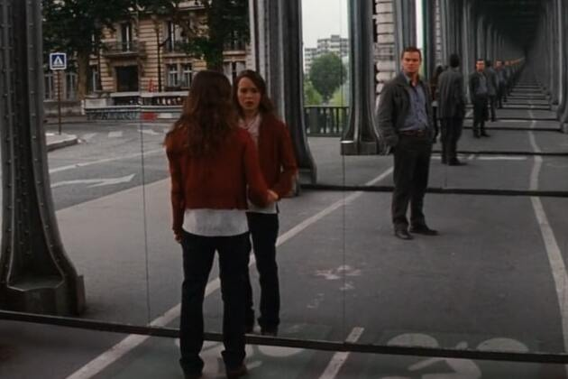

"Inception," directed by Christopher Nolan, is a mind-bending sci-fi thriller that explores the intricacies of dreams and the human subconscious. The film follows Dom Cobb (Leonardo DiCaprio), a skilled thief who specializes in extracting secrets from within the human mind by infiltrating his targets' dreams. Cobb is offered a chance to have his criminal record erased in exchange for performing an almost impossible task: "inception" – planting an idea into someone's subconscious.
The film opens with Cobb and his team – Arthur (Joseph Gordon-Levitt), Ariadne (Ellen Page), Eames (Tom Hardy), Yusuf (Dileep Rao), and Saito (Ken Watanabe) – as they are hired by a wealthy businessman, Saito, to infiltrate the dreams of Robert Fischer (Cillian Murphy) and plant the idea to dissolve his father's empire. As they delve deeper into the layers of Fischer's dreams, the team faces numerous challenges, including projections of Fischer's subconscious and Cobb's haunting memories of his deceased wife, Mal (Marion Cotillard).
"Inception" delves into themes of reality versus illusion, the power of the subconscious, and the nature of human guilt and redemption. The film raises questions about the reliability of perception and the influence of hidden desires and fears on our actions and decisions.
The cinematography by Wally Pfister is stunning, utilizing a mix of practical effects and CGI to create the film's surreal dreamscapes. Iconic scenes such as the folding cityscape of Paris, the zero-gravity hotel corridor fight, and the crumbling dream environments are visually breathtaking and contribute to the film's immersive experience. The film's use of innovative special effects and meticulous attention to detail create a believable and visually arresting representation of dream worlds.
"Inception" explores the fluid boundaries between reality and dreams, challenging the audience to question the nature of perception and consciousness. The concept of "inception" – planting an idea so deeply within the subconscious that it is perceived as organic – raises philosophical questions about free will and the influence of external forces on our thoughts and decisions.
The film also delves into the themes of guilt and redemption, as Cobb's journey is driven by his desire to reconcile with the memory of his wife and return to his children. The intricate narrative structure, with its multiple layers of dreams within dreams, mirrors the complexity of the human mind and the ways in which past traumas and unresolved emotions can shape our reality.
"Inception" was filmed in various locations around the world to create the diverse settings within the dream sequences:
Paris, France: Key scenes, including the iconic folding cityscape, were filmed in Paris.
Nijo Castle, Japan: Nijo Castle serves as the film location for the opening scenes of “Inception.” The first scenes in Inception have a distinctly Japanese look.
"Inception" is a groundbreaking film that combines a compelling narrative, innovative special effects, and thought-provoking themes to create a unique cinematic experience. Christopher Nolan's direction, combined with a talented cast and stunning visuals, results in a film that is both intellectually stimulating and emotionally engaging.
The film's exploration of the subconscious and the nature of reality continues to resonate with audiences, making "Inception" a modern classic in the sci-fi and thriller genres. Its intricate plot, memorable performances, and visionary direction ensure that it remains a must-watch for any film enthusiast.
Overall, "Inception" is a masterful blend of action, mystery, and psychological depth, offering a cinematic journey that challenges the mind and captivates the senses.